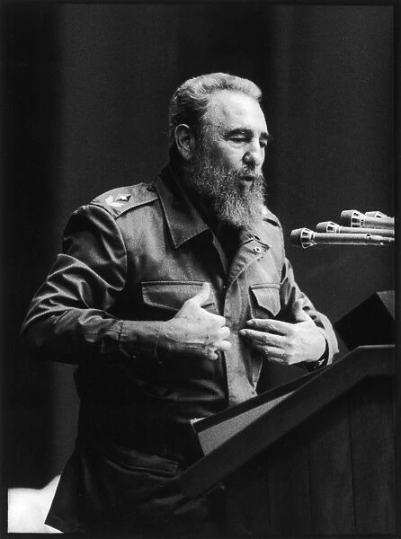
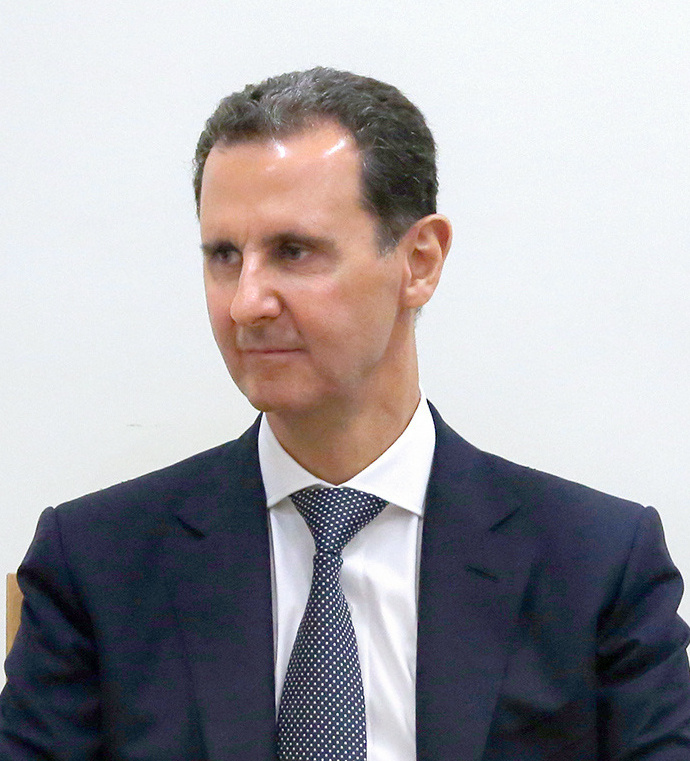
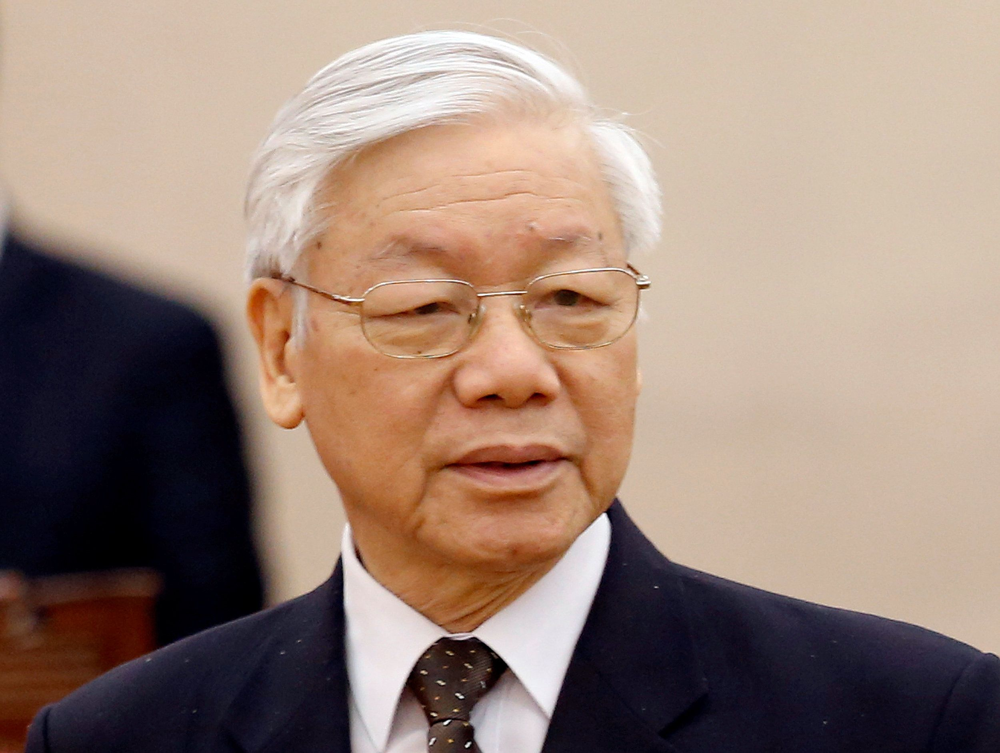
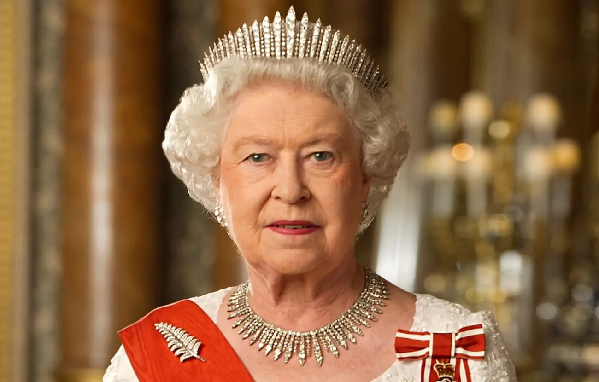

Título de la noticia:
Distorsiones
Cuba - Dictadura

Cuba es un país con un sistema político de tipo dictatorial, donde el poder se concentra en el líder sin un control democrático significativo.
El gobierno cubano no propone elecciones libres o democracia, sino que continúa soportando y tratando de hacer más con menos. Miles de cubanos han protestado en las calles contra el gobierno comunista de la isla por la falta de alimentos, medicinas, libertad y la mala gestión de la pandemia
Explicación de la Noticia:
- 1) Control Estatal: El gobierno ejerce un control total sobre los medios de comunicación y las instituciones, limitando la libertad de expresión.
- 2) Represión Política: Existen restricciones severas a la disidencia política y a las manifestaciones públicas, con detenciones arbitrarias de opositores al régimen.
- 3) Economía Centralizada: El país sigue un modelo económico centralizado y planificado, con pocas libertades económicas para los ciudadanos.
- 4) Partido Único: El Partido Comunista de Cuba es el único partido político permitido, limitando la pluralidad política y la competencia electoral.
Líder: Fidel Castro
Título de la noticia:
Siria: Muerte masiva, tortura y otras violaciones contra personas detenidas
Siria - Islamismo

Explicación de la Noticia:
Las personas detenidas tras la derrota territorial del grupo armado Estado Islámico (EI) están enfrentando violaciones sistemáticas y muriendo en gran número debido a las condiciones inhumanas en el noreste de Siria
- 1) Dominio Religioso: El gobierno está influenciado por una interpretación radical del Islam, que guía las políticas y las leyes del país.
- 2) Autoritarismo Religioso: Se imponen normas estrictas basadas en la ley islámica (sharia), restringiendo las libertades individuales y los derechos de las minorías.
- 3) Conflicto Armado: La presencia de grupos extremistas como el Estado Islámico ha generado conflictos internos y violencia en diversas regiones del país.
- 4) Relaciones Internacionales: La política exterior se basa en alianzas con otros estados islámicos y en la defensa de los intereses religiosos.
Líder: Bashar al-Assad
Título de la noticia:
Documento filtrado del Partido Comunista de Vietnam advierte sobre "fuerzas hostiles"
Vietnam - Comunismo

Explicación de la Noticia:
Vietnam es un país con un sistema político comunista, donde el control estatal es central en la economía y la vida social.
- 1) Economía Planificada: El gobierno controla los principales sectores económicos y promueve la propiedad estatal, aunque ha implementado reformas para permitir cierto grado de inversión extranjera.
- 2) Partido Único: El Partido Comunista de Vietnam tiene el monopolio político, limitando la competencia política y la libertad de expresión.
- 3) Reformas Graduales: A pesar de mantener un sistema comunista, el país ha realizado reformas económicas que han impulsado el crecimiento y la apertura al mercado internacional.
- 4) Control Social: Existen restricciones a la libertad de prensa y a las actividades de la sociedad civil, con un énfasis en mantener la estabilidad política y social.
Líder: Nguyen Phu Trong
Título de la noticia:
Apoyo público británico a la monarquía en mínimo histórico, revela encuesta
Inglaterra - Monarquía

Explicación de la Noticia:
Inglaterra es una monarquía constitucional donde la realeza desempeña un papel simbólico y ceremonial en el gobierno.
Pero el apoyo a la monarquía ha caído a niveles vistos por última vez en 2021. El número de personas que dicen que la monarquía es “muy importante” y ha caído al 29%, desde el 38% en 2022, pero aun así tiene las siguientes caracteristicas:
- 1) Monarquía Constitucional: La monarquía desempeña un papel ceremonial y representativo, con poderes limitados por la Constitución y el gobierno parlamentario.
- 2) Estabilidad Institucional: La presencia de una familia real proporciona continuidad y estabilidad en el sistema político y cultural del país.
- 3) Respaldo Popular: A pesar de las críticas y debates sobre la relevancia de la monarquía en la era moderna, la familia real sigue contando con un respaldo significativo por parte de la población.
- 4) Simbolismo Nacional: La monarquía es vista como un símbolo de la identidad nacional y juega un papel importante en eventos y tradiciones históricas del país.
Líder: Reina Isabel II